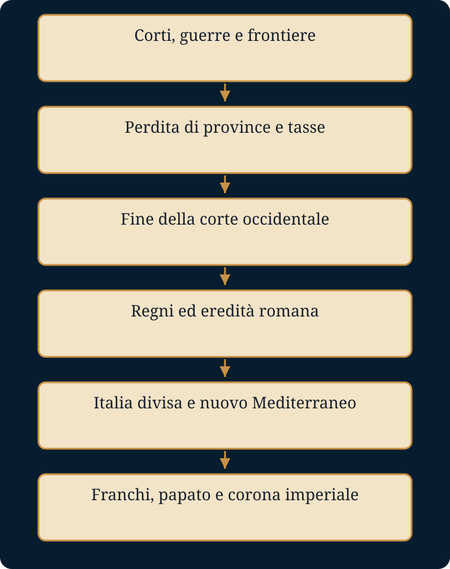

Che cosa finisce di Roma, che cosa sopravvive e che cosa cambia forma tra il 337 e l’800?
Luoghi e tempi. Reno e Danubio; Balcani e Adrianopoli; Roma e Ravenna; Cartagine; Costantinopoli; Gallia, Pavia e Aquisgrana. Il racconto passa dall’unità mediterranea a più centri di potere.
- Mondo precedente
- Uno Stato cristianizzato conserva dinastie, corti, eserciti e una complessa amministrazione romana.
- Fratture
- Il 378, la perdita dell’Africa e il 476 scandiscono crisi diverse; nessuna spiega tutto da sola.
- Attori e conflitti
- Imperatori, generali, gruppi migranti, re, contribuenti e vescovi negoziano protezione e riconoscimento.
- Processo e cause
- Perdere province significa perdere tasse; minori entrate riducono la capacità militare e favoriscono altre perdite.
- Conseguenze
- L’Italia si divide; l’Oriente sopravvive; i regni occidentali rielaborano l’eredità romana.
- Risposta alla domanda
- Finisce la corte imperiale occidentale; sopravvivono in forme mutate diritto, lingua, Chiesa e idea di Impero. Carlo costruisce un potere nuovo, non restaura la società antica.
La dispensa integrale
Testo originale di gbprof e Libera, comprese le attività e le tabelle. Le sezioni introduttiva e conclusiva di questa pagina sono strumenti aggiunti. Scarica il Word originale.
IL MONDO CHE CAMBIÒ VOLTO
Dalla morte di Costantino all’incoronazione di Carlo Magno
Racconto storico per gli studenti
Versione narrativa controllata sul piano storico
Prima di cominciare
Questo testo racconta quasi cinque secoli di storia, dal 337 all’anno 800. Non è un romanzo: i protagonisti, le guerre, le decisioni politiche e le trasformazioni sociali sono storici. La forma è narrativa, ma non vengono inventati dialoghi, pensieri privati o scene che le fonti non permettono di ricostruire.
Quando le testimonianze antiche sono incerte o orientate dalla propaganda, il racconto lo dichiara. Il lettore incontrerà quindi formule come “secondo alcune fonti”, “non sappiamo con certezza” o “gli storici discutono”. Non sono esitazioni: sono il modo corretto di fare storia.
Il filo conduttore non è la semplice “caduta” di Roma. In Occidente molte strutture imperiali si disgregarono e la vita materiale peggiorò in diverse regioni; nello stesso tempo sopravvissero leggi, istituzioni, città, vescovati, lingue e memorie romane. Il mondo antico non scomparve in un giorno: cambiò forma.
1. Tre imperatori per un solo impero
337-361
Alla morte di Costantino, l’Impero romano sembrava ancora immenso e potente. Ma la sua unità dipendeva ormai dall’equilibrio fragile tra eserciti, corti e dinastie.
La morte del fondatore
Nel 337 Costantino morì nei pressi di Nicomedia. Aveva governato a lungo, sconfitto molti rivali e trasformato il rapporto tra il potere imperiale e il cristianesimo. Lasciava però irrisolto il problema più pericoloso: chi avrebbe governato dopo di lui.
I suoi tre figli, Costantino II, Costante e Costanzo II, si divisero le grandi aree dell’Impero. Non nacquero tre Stati separati: ciascuno continuava a presentarsi come parte dell’unico Impero romano. Ma ogni augusto disponeva di una corte, di funzionari e soprattutto di eserciti propri. Quando gli interessi entrarono in conflitto, la collegialità divenne guerra.
Costantino II cadde nel 340 combattendo contro il fratello Costante. Dieci anni più tardi Costante fu rovesciato dall’usurpatore Magnenzio. Costanzo II dovette allora spostare uomini e risorse dal confine persiano verso l’Occidente, affrontare una nuova guerra civile e, nel 353, rimanere unico imperatore. Aveva vinto, ma il prezzo della vittoria era alto: campagne devastate, soldati perduti, diffidenza nelle élite e frontiere meno protette.
Un giovane cesare nelle Gallie
Costanzo non poteva essere contemporaneamente sul Reno e in Mesopotamia. Nel 355 nominò cesare il cugino Giuliano e lo inviò nelle Gallie. Il titolo non faceva di lui un sovrano indipendente: Giuliano era un collaboratore subordinato, sorvegliato dagli uomini dell’imperatore.
In pochi anni, tuttavia, il giovane principe ottenne successi contro Alamanni e Franchi, riorganizzò le difese e cercò di alleggerire alcuni carichi fiscali. La sua reputazione crebbe tra le truppe. Nel 360, quando Costanzo ordinò il trasferimento di reparti gallici verso l’Oriente, i soldati acclamarono Giuliano augusto.
Una nuova guerra civile sembrò inevitabile. Non ebbe luogo perché Costanzo morì nel 361. Giuliano divenne così l’unico imperatore. Aveva poco più di trent’anni e un progetto che lo avrebbe reso celebre e controverso.
2. Giuliano e l’ultima restaurazione pagana
361-363
Giuliano non voleva soltanto governare. Voleva cambiare la direzione religiosa e culturale intrapresa dall’Impero dopo Costantino.
L’imperatore filosofo
Giuliano era cresciuto in una famiglia cristiana, ma da adulto aveva aderito ai culti tradizionali e alla filosofia neoplatonica. Considerava la religione greco-romana non come un insieme di superstizioni ormai morte, ma come la base spirituale della civiltà ellenica.
Una volta imperatore, riaprì templi, restituì privilegi ai sacerdoti pagani e cercò di organizzare i culti antichi in modo più unitario. Non avviò una persecuzione generale e sanguinosa dei cristiani. Preferì ridurne l’influenza politica e culturale, favorendo le comunità pagane e richiamando dall’esilio vescovi cristiani tra loro rivali, forse nella speranza che le loro divisioni indebolissero la Chiesa.
La battaglia per la scuola
Nel 362 Giuliano intervenne sulla nomina degli insegnanti pubblici. Una legge prescriveva che i docenti fossero approvati dalle autorità cittadine e dall’imperatore; in una lettera collegata a quel provvedimento, Giuliano sostenne che chi non credeva negli dèi celebrati da Omero non avrebbe dovuto spiegare Omero agli studenti.
La misura colpiva soprattutto gli insegnanti cristiani di grammatica e retorica. Il suo significato preciso è ancora discusso, ma l’obiettivo politico è chiaro: impedire che la nuova élite cristiana controllasse la formazione classica, indispensabile per accedere alle cariche pubbliche. Era una lotta per il futuro, combattuta nelle aule prima ancora che nei templi.
La campagna persiana
Giuliano volle poi ottenere una grande vittoria contro l’Impero sasanide. Nel 363 avanzò profondamente in Mesopotamia e raggiunse le porte di Ctesifonte, ma non riuscì a conquistare la capitale persiana. Ordinò di bruciare parte della flotta fluviale e iniziò una difficile ritirata attraverso territori devastati.
Durante uno scontro fu ferito da una lancia e morì poco dopo. Le fonti cristiane trasformarono la sua fine in una punizione divina; quelle pagane piansero l’ultimo imperatore fedele agli dèi antichi. Sul piano storico, la sua morte mostrò soprattutto quanto il suo progetto dipendesse dalla persona dell’imperatore. Senza di lui, la restaurazione pagana si dissolse rapidamente.
3. La ritirata dall’Oriente
363-378
La morte di Giuliano lasciò l’esercito romano lontano dalle proprie basi, affamato e circondato. La prima necessità non era salvare il prestigio, ma salvare gli uomini.
Gioviano e la pace necessaria
Gli ufficiali elessero imperatore Gioviano, comandante della guardia. Egli non disponeva del tempo necessario per consolidare il potere: il re persiano Sapore II controllava le vie di ritirata. Per riportare l’esercito in territorio romano, Gioviano accettò condizioni durissime.
Roma cedette territori a est del Tigri e rinunciò a importanti piazzeforti, tra cui Nisibi. La città, da lungo tempo baluardo romano, fu evacuata e i suoi abitanti dovettero abbandonare le case. Per molti contemporanei quel trattato fu umiliante. Per Gioviano fu il prezzo della sopravvivenza dell’esercito.
Il nuovo imperatore ristabilì il favore verso il cristianesimo niceno e annullò le misure più ostili di Giuliano. Morì però nel 364, dopo pochi mesi di regno. Le cause non sono certe: le fonti parlano di un ambiente chiuso, fumi di braciere o cattiva digestione. Anche in questo caso, la rapidità degli eventi impedì una politica stabile.
Due fronti, due corti
Dopo Gioviano, Valentiniano I assunse il governo dell’Occidente e affidò l’Oriente al fratello Valente. La divisione rispondeva a un problema concreto: il territorio era troppo vasto e le minacce troppo numerose per un solo centro operativo.
Mentre Valentiniano difendeva il Reno e il Danubio, Valente doveva controllare i Balcani e contenere la Persia. Nessuno dei due immaginava che, pochi anni dopo, un movimento iniziato nelle steppe avrebbe spinto intere popolazioni verso le frontiere romane.
4. Il Danubio si apre
375-382
Gli Unni non abbatterono direttamente l’Impero romano d’Occidente, ma alterarono gli equilibri del mondo barbarico e misero in movimento gruppi che cercarono rifugio entro i confini romani.
Profughi alla frontiera
Intorno al 375 gli Unni avanzarono nelle regioni a nord del Mar Nero. Gruppi gotici furono sconfitti o costretti a spostarsi. Nel 376 una parte dei Tervingi, guidata da Fritigerno, chiese di attraversare il Danubio e di stabilirsi in territorio imperiale.
Per Roma non era una richiesta assurda. L’Impero aveva spesso accolto gruppi esterni, distribuendo terre e ottenendo in cambio contadini e soldati. Valente autorizzò l’ingresso, ma l’operazione fu gestita male. Migliaia di persone furono concentrate senza rifornimenti sufficienti; funzionari corrotti specularono sul cibo e, secondo le fonti, arrivarono a scambiare carne di cane con schiavi goti.
La fame trasformò i rifugiati in ribelli. I Goti si armarono, si unirono ad altri gruppi e iniziarono a devastare la Tracia. La crisi non nacque soltanto da una “invasione”: fu anche il fallimento dell’amministrazione romana nel governare un ingresso che essa stessa aveva autorizzato.
Adrianopoli
Il 9 agosto 378 Valente affrontò i Goti nei pressi di Adrianopoli. Decise di combattere prima dell’arrivo dei rinforzi occidentali dell’imperatore Graziano. Le ragioni sono discusse: forse temeva che il nipote condividesse il merito della vittoria, forse sottovalutò il numero degli avversari.
La battaglia si trasformò in una catastrofe. La cavalleria gotica colpì i fianchi romani, lo schieramento imperiale si compresse e perse la capacità di manovrare. Valente morì; il suo corpo non fu ritrovato con certezza. Una tradizione racconta che, ferito, si fosse rifugiato in una casa poi incendiata dai nemici.
Adrianopoli non distrusse l’Impero e non rese improvvisamente inutile l’esercito romano. Fu però una perdita gravissima di uomini esperti e mostrò che gruppi armati stanziati all’interno dei confini potevano sconfiggere un esercito imperiale in campo aperto.
La pace del 382
Graziano affidò l’Oriente a Teodosio. Per alcuni anni il nuovo imperatore combatté, negoziò, reclutò nuove truppe e cercò di dividere i gruppi gotici. Non riuscì a ottenere una vittoria decisiva.
Nel 382 fu raggiunto un accordo. I termini esatti non ci sono giunti e gli storici discutono quanto fosse eccezionale. Sappiamo che gruppi gotici poterono stabilirsi nei Balcani e che avrebbero fornito soldati all’Impero. Non erano ancora un regno indipendente; tuttavia conservarono capi e una coesione maggiore rispetto a molti precedenti insediamenti.
Il compromesso permise a Teodosio di ristabilire un equilibrio. Ma pose una domanda destinata a tornare: che cosa sarebbe accaduto quando questi guerrieri avessero ritenuto insufficienti terre, paghe o riconoscimenti?
5. Teodosio: un impero, una fede, molte fratture
379-395
Teodosio cercò di ricostruire l’autorità imperiale. Lo fece usando insieme la guerra, la diplomazia e una nuova definizione religiosa dello Stato.
La scelta nicena
Nel 380 Teodosio, insieme a Graziano e Valentiniano II, promulgò l’editto di Tessalonica. Il testo indicava come norma la fede professata dal vescovo di Roma Damaso e dal vescovo di Alessandria Pietro: il cristianesimo niceno, fondato sulla piena divinità del Padre, del Figlio e dello Spirito Santo.
Non bastò una legge a rendere improvvisamente cristiana l’intera popolazione. Le pratiche tradizionali continuarono, soprattutto nelle campagne e in molte famiglie aristocratiche. Ma il rapporto di forza era cambiato: il potere imperiale non si presentava più come arbitro tra culti diversi; sosteneva una forma precisa di cristianesimo e limitava progressivamente sacrifici e cerimonie pagane.
Negli anni successivi templi furono chiusi, alcuni furono trasformati, altri distrutti in conflitti locali. Ad Alessandria il Serapeo fu abbattuto nel 391 dopo scontri violenti. Non fu la fine immediata della cultura classica, ma la fine della protezione pubblica di cui i culti antichi avevano goduto per secoli.
L’imperatore davanti al vescovo
Nel 390, dopo l’uccisione di un comandante a Tessalonica, le truppe imperiali massacrarono molti abitanti della città. Il vescovo Ambrogio di Milano condannò l’azione e chiese a Teodosio una penitenza prima di riammetterlo pienamente alla comunione.
Le ricostruzioni successive hanno accentuato la scena dell’imperatore umiliato davanti alle porte della chiesa. I dettagli non sono tutti certi. Il significato politico, però, è chiaro: un vescovo poteva giudicare moralmente l’operato del sovrano e costringerlo a dimostrare pubblicamente il proprio pentimento. L’autorità religiosa non sostituiva quella imperiale, ma diventava un potere con cui l’imperatore doveva trattare.
Il Frigido
Nel 392 Valentiniano II morì in Gallia in circostanze oscure. Il generale Arbogaste, di origine franca, sostenne l’ascesa di Eugenio. Teodosio non lo riconobbe e preparò la guerra.
Nel settembre 394 i due eserciti si affrontarono presso il fiume Frigido, nelle Alpi Giulie. Fonti cristiane presentarono lo scontro come la battaglia decisiva tra cristianesimo e paganesimo e raccontarono di un vento provvidenziale che avrebbe respinto i dardi dei nemici. Gli storici moderni sono più prudenti: Eugenio era cristiano e il conflitto fu soprattutto una guerra per il controllo dell’Impero, anche se l’aristocrazia pagana di Roma sostenne in parte il suo governo.
Teodosio vinse. Eugenio fu ucciso e Arbogaste si suicidò. Migliaia di soldati, compresi molti Goti alleati di Teodosio, morirono. L’Impero tornò sotto un solo sovrano, ma soltanto per pochi mesi.
La divisione del 395
Teodosio morì a Milano nel gennaio 395. L’Oriente passò al figlio Arcadio, l’Occidente a Onorio. Non era la prima divisione amministrativa e, dal punto di vista giuridico, l’Impero rimaneva uno. Le leggi potevano essere emanate a nome di entrambi gli augusti e l’idea dell’unità romana non scomparve.
Eppure le due corti avevano interessi diversi. Costantinopoli possedeva regioni più ricche, città numerose e una base fiscale più solida. L’Occidente doveva difendere frontiere estese con risorse minori. Da quel momento, le rivalità tra le corti e i loro generali resero sempre più difficile una politica comune.
6. Il secolo delle invasioni e dei generali
395-476
Nel V secolo l’Occidente non fu travolto in una sola volta. Perse territori, entrate fiscali e capacità militare attraverso una lunga serie di crisi.
Alarico e il sacco di Roma
Dopo la morte di Teodosio, i Goti guidati da Alarico reclamarono un comando stabile, terre e paghe. Le corti d’Oriente e d’Occidente cercarono talvolta di usarli l’una contro l’altra. Alarico entrò più volte in Italia, negoziò con il governo di Onorio e, quando le trattative fallirono, assediò Roma.
Nel 410 la città fu saccheggiata per tre giorni. Roma non era più la capitale politica dell’Impero, ma restava il centro simbolico del mondo romano. La notizia provocò sgomento da un capo all’altro del Mediterraneo. Agostino d’Ippona iniziò a scrivere La città di Dio anche per rispondere a chi attribuiva la sventura all’abbandono degli antichi dèi.
Il sacco non significò la fine immediata della vita romana. Le istituzioni continuarono, il Senato rimase attivo e l’imperatore governava da Ravenna. Ma il prestigio dell’invincibilità era spezzato.
Il Reno e la perdita delle province
Nell’inverno tra il 406 e il 407 gruppi di Vandali, Alani e Svevi attraversarono il Reno. Le fonti non permettono di ricostruire con precisione il luogo e le condizioni del passaggio, ma l’effetto fu enorme. La Gallia fu percorsa da eserciti e bande; parte dei gruppi si spostò poi in Hispania.
I Visigoti, dopo la morte di Alarico, entrarono in rapporto con l’Impero e si stabilirono in Aquitania. I Vandali attraversarono lo stretto di Gibilterra e conquistarono l’Africa romana. Nel 439 presero Cartagine.
La perdita dell’Africa fu forse più grave di molte sconfitte militari. Le province africane fornivano grano e soprattutto entrate fiscali. Senza quelle risorse, Ravenna aveva meno denaro per pagare esercito e amministrazione. La crisi politica diventò crisi finanziaria, e la crisi finanziaria rese più difficile ogni reazione militare.
Attila e l’ultima coalizione
A metà del secolo gli Unni di Attila costruirono un vasto dominio a nord del Danubio e imposero tributi all’Impero d’Oriente. Nel 451 Attila invase la Gallia. Il generale romano Ezio organizzò una coalizione che comprendeva Visigoti e altri gruppi germanici.
Lo scontro dei Campi Catalaunici fermò l’avanzata unna, ma non fu una vittoria capace di restaurare la forza romana. L’anno seguente Attila entrò in Italia. Incontrò una delegazione guidata da papa Leone I e si ritirò. Le ragioni furono probabilmente molte: difficoltà di rifornimento, malattie, minaccia orientale e negoziati. La tradizione attribuì al papa un ruolo miracoloso; la storia deve lasciare aperta la complessità della decisione.
Imperatori senza potere
Dopo l’assassinio di Ezio nel 454 e quello dell’imperatore Valentiniano III nel 455, l’Occidente entrò in una fase di estrema instabilità. Generali potenti, spesso di origine barbarica, decidevano chi dovesse portare la porpora. Ricimero fu il più celebre di questi “creatori di imperatori”.
Alcuni sovrani tentarono una riscossa. Maggioriano riformò l’amministrazione e preparò una spedizione contro i Vandali, ma la flotta fu distrutta prima di salpare. Nel 468 un’enorme operazione congiunta di Oriente e Occidente contro Cartagine fallì, consumando risorse immense.
L’Impero d’Occidente conservava ancora il nome, il cerimoniale e funzionari capaci. Aveva però perduto gran parte delle province da cui ricavava uomini e tasse. Il governo centrale controllava ormai soprattutto l’Italia e territori sempre più ridotti.
Il 476
Nel 475 il generale Oreste pose sul trono il giovane figlio Romolo, chiamato poi Augustolo, “piccolo Augusto”. L’anno seguente i soldati federati stanziati in Italia chiesero terre. Al rifiuto di Oreste si ribellarono sotto la guida di Odoacre.
Oreste fu ucciso e Romolo deposto. Odoacre non nominò un nuovo imperatore d’Occidente. Inviò le insegne imperiali a Costantinopoli e governò l’Italia con il titolo di re, riconoscendo formalmente la superiorità dell’imperatore d’Oriente.
Per molti contemporanei non vi fu un giorno in cui “Roma finì”. Le tasse continuarono a essere riscosse, i tribunali a giudicare e i proprietari a coltivare le terre. Eppure il 476 resta una data significativa: da allora in Occidente non esistette più una corte imperiale autonoma. Una struttura politica durata secoli cessò di funzionare.
7. Regni romani governati da barbari
476-535
I nuovi sovrani non volevano distruggere ogni cosa romana. Avevano bisogno delle competenze, delle leggi e del prestigio dell’Impero per governare.
Odoacre, re in Italia
Odoacre governò attraverso funzionari romani, rispettò il Senato e mantenne gran parte dell’amministrazione esistente. Distribuì risorse ai suoi soldati, probabilmente usando forme di assegnazione fiscale e fondiaria che gli storici discutono ancora.
Il problema non era soltanto amministrativo. A Costantinopoli l’imperatore Zenone temeva l’autonomia crescente di Odoacre. Per eliminarlo, spinse verso l’Italia il re ostrogoto Teodorico.
Teodorico il Grande
Teodorico era stato a lungo ostaggio e poi alleato della corte orientale. Entrò in Italia nel 489 e, dopo anni di guerra, uccise Odoacre nel 493. Fondò un regno ostrogoto che si presentava come continuatore dell’ordine romano.
I Romani conservarono il diritto civile e le cariche amministrative; i Goti costituirono il nucleo principale dell’esercito. Ravenna, Verona e Roma conobbero restauri e nuove costruzioni. Cassiodoro redigeva lettere di governo in uno stile pienamente romano; Boezio traduceva e commentava la filosofia greca.
La convivenza, tuttavia, non fu perfetta. Goti e Romani appartenevano a comunità giuridiche e religiose differenti: i primi erano in maggioranza ariani, i secondi cattolici niceni. Negli ultimi anni Teodorico temette complotti filobizantini. Boezio fu imprigionato e giustiziato; anche il suocero Simmaco fu ucciso. Il regno che sembrava aver conciliato due mondi mostrò le proprie crepe.
8. La guerra che devastò l’Italia
535-568
Giustiniano voleva restaurare l’unità imperiale. La riconquista riuscì, ma lasciò l’Italia più debole di quanto l’avesse trovata.
Il sogno di Giustiniano
Da Costantinopoli l’imperatore Giustiniano progettò la renovatio imperii, il recupero delle province occidentali. Il generale Belisario conquistò il regno vandalo d’Africa e nel 535 sbarcò in Sicilia, aprendo la guerra contro gli Ostrogoti.
Roma cambiò più volte padrone. Assedi, carestie ed epidemie colpirono le città. Il re goto Totila riconquistò gran parte della penisola, ma il generale Narsete lo sconfisse nel 552. L’ultima resistenza gotica fu spezzata l’anno seguente.
Dopo quasi vent’anni di guerra l’Italia era tornata sotto l’autorità imperiale, ma molte campagne erano spopolate, gli acquedotti danneggiati, le aristocrazie indebolite e le entrate fiscali ridotte. La vittoria militare non ricreò automaticamente la società del passato.
Una riconquista troppo fragile
Nel 554 Giustiniano estese all’Italia il proprio ordinamento e cercò di ristabilire imposte, amministrazione e proprietà. Costantinopoli doveva però difendere contemporaneamente Balcani, Oriente e Mediterraneo. Le guarnigioni italiane erano insufficienti.
Quando nel 568 i Longobardi attraversarono le Alpi, trovarono una penisola stanca e mal difesa.
9. L’Italia spezzata
568-VIII secolo
Con l’arrivo dei Longobardi l’Italia cessò di essere un territorio politicamente unitario. La frattura avrebbe segnato la sua storia per molti secoli.
L’ingresso dei Longobardi
I Longobardi, guidati dal re Alboino, occuparono rapidamente gran parte della pianura padana e crearono ducati anche nell’Italia centrale e meridionale. Non conquistarono però l’intera penisola.
Ravenna, Roma, parte delle coste, la Sicilia, la Sardegna e vari territori meridionali rimasero sotto il controllo bizantino. Tra le aree longobarde e quelle imperiali si formarono confini mobili, corridoi e zone contese. Viaggiare da una regione all’altra significava attraversare domini, leggi e autorità differenti.
Duchi, re e conversioni
All’inizio il potere longobardo era molto frammentato. I duchi disponevano di ampie autonomie e il re non controllava ogni territorio. Nel tempo, tuttavia, la monarchia cercò di rafforzarsi e di governare anche attraverso istituzioni ereditate da Roma.
I Longobardi erano pagani o cristiani ariani, ma si avvicinarono progressivamente al cattolicesimo. La regina Teodolinda favorì i rapporti con papa Gregorio Magno. Nel 643 il re Rotari fece mettere per iscritto le leggi longobarde in latino. Era il segno di una trasformazione: i conquistatori non erano più semplicemente un esercito straniero, ma una società radicata in Italia e sempre più mescolata con la popolazione romana.
Il vescovo di Roma tra due poteri
Il papa restava formalmente suddito dell’imperatore di Costantinopoli, ma la distanza e la debolezza delle forze bizantine lo costringevano ad assumere responsabilità concrete: organizzare rifornimenti, riscattare prigionieri, trattare con i duchi longobardi, amministrare vasti patrimoni fondiari.
Gradualmente il vescovo di Roma divenne non soltanto una guida religiosa, ma anche un’autorità politica dell’Italia centrale. Quando il rapporto con Costantinopoli si deteriorò, soprattutto durante la controversia iconoclasta, il papato cercò un nuovo protettore oltre le Alpi.
10. Il Mediterraneo cambia
VII-VIII secolo
Mentre l’Occidente si trasformava, una nuova potenza conquistò in pochi decenni le regioni più ricche del Mediterraneo orientale e meridionale.
L’espansione islamica
Dopo la morte di Maometto nel 632, gli eserciti dei califfi conquistarono Siria, Palestina, Egitto e Persia. In seguito avanzarono lungo il Nord Africa e, nel 711, entrarono nella penisola iberica.
Per l’Impero romano d’Oriente fu una perdita enorme. L’Egitto era un grande produttore di grano e un centro fiscale decisivo; Siria e Palestina ospitavano città ricche e antiche comunità cristiane. Costantinopoli sopravvisse, ma dovette trasformarsi in un impero più concentrato sull’Anatolia e sui Balcani.
La tesi di Pirenne
Nel Novecento lo storico Henri Pirenne sostenne che le invasioni germaniche non avessero spezzato davvero l’unità economica del Mediterraneo. Secondo lui, la rottura decisiva avvenne con le conquiste islamiche, che avrebbero ridotto gli scambi tra Oriente e Occidente e spostato il centro dell’Europa verso il Nord franco.
La formula più famosa fu: “Senza Maometto, Carlo Magno è inconcepibile”. È una tesi potente, non una verità indiscussa. L’archeologia ha mostrato che il commercio mediterraneo era già diminuito in varie regioni prima dell’Islam e che non scomparve del tutto dopo le conquiste. Tuttavia Pirenne colse un cambiamento reale: dal VII secolo il Mediterraneo non fu più lo spazio unitario governato da un’unica grande potenza romana.
Verso il Nord
Nell’Europa occidentale il potere si fondava sempre più sul controllo della terra, sulle fedeltà personali e sulla capacità dei grandi proprietari di armare uomini. Le città non scomparvero, ma in molte regioni si ridussero; le monete d’oro divennero più rare e il commercio a lunga distanza perse parte della precedente intensità.
In questo mondo meno mediterraneo e più continentale, il regno dei Franchi possedeva una posizione favorevole. Controllava la Gallia, le regioni renane e le vie che collegavano il Mare del Nord, le pianure germaniche e l’Italia.
11. I Franchi e la nuova alleanza con Roma
V-VIII secolo
Tra i regni nati nell’Occidente postromano, quello dei Franchi riuscì più di altri a unire forza militare, legittimità religiosa ed eredità gallo-romana.
Clodoveo
Alla fine del V secolo Clodoveo, re dei Franchi, sconfisse rivali romani e germanici e costruì un grande regno in Gallia. La sua conversione al cristianesimo niceno, celebrata dalla tradizione con il battesimo a Reims, lo avvicinò ai vescovi e alla popolazione gallo-romana.
A differenza di molti sovrani germanici ariani, Clodoveo condivideva la fede della maggioranza dei cristiani romani. Questo non cancellò conflitti e violenze, ma facilitò la collaborazione tra aristocrazia guerriera franca e gerarchie ecclesiastiche.
Dai Merovingi ai Carolingi
Dopo Clodoveo il regno fu più volte diviso tra gli eredi della dinastia merovingia. Guerre familiari e rivalità indebolirono i re. Il potere effettivo passò progressivamente ai maestri di palazzo, funzionari che dirigevano l’esercito e amministravano i territori.
Carlo Martello consolidò questa posizione e nel 732-733 sconfisse presso Poitiers un esercito proveniente da al-Andalus. La battaglia non “salvò da sola l’Europa”, come avrebbe raccontato una tradizione successiva, ma rafforzò enormemente il prestigio della famiglia carolingia.
Suo figlio Pipino il Breve decise di trasformare il potere di fatto in regalità. Chiese al papa chi dovesse essere re: chi possedeva il titolo o chi esercitava realmente il comando? Con l’approvazione papale, depose l’ultimo merovingio e fu consacrato re.
La donazione di Pipino
Il papa aveva bisogno di aiuto contro i Longobardi, che minacciavano Roma e avevano conquistato Ravenna. Pipino scese in Italia, sconfisse il re longobardo e consegnò al papato territori dell’Italia centrale.
Quella scelta pose le basi del potere temporale dei papi. In cambio, la nuova dinastia franca riceveva una legittimazione religiosa senza precedenti. La protezione armata e la consacrazione si sostenevano a vicenda.
12. Carlo Magno, re e conquistatore
768-800
Carlo non ricevette un impero già pronto. Lo costruì attraverso decenni di guerre, accordi, riforme e una capacità instancabile di spostarsi da una regione all’altra.
Il regno diviso e riunito
Alla morte di Pipino nel 768, il regno fu diviso tra Carlo e il fratello Carlomanno. La morte improvvisa di Carlomanno nel 771 lasciò Carlo unico sovrano. Da quel momento iniziò una lunga espansione.
Combatté contro i Sassoni per oltre trent’anni. Le campagne furono dure e la conversione al cristianesimo fu spesso imposta con la forza. Carlo deportò popolazioni, punì le ribellioni e nel 782 fece giustiziare a Verden migliaia di prigionieri sassoni secondo gli annali franchi. La costruzione dell’unità cristiana ebbe anche un volto violento.
La fine del regno longobardo
In Italia il re longobardo Desiderio entrò in conflitto con papa Adriano I. Carlo attraversò le Alpi, assediò Pavia e nel 774 assunse il titolo di re dei Longobardi. Non distrusse ogni istituzione del regno: governò attraverso conti, duchi e funzionari, integrando le élite locali.
L’Italia centro-settentrionale entrò così nel sistema politico franco. Roma e i territori papali conservarono una posizione particolare, legata alla protezione del re.
Governare un territorio immenso
L’impero di Carlo si estendeva dai Pirenei all’Elba e dall’Italia centrale al Mare del Nord. Non possedeva una capitale nel senso romano. Il sovrano si spostava tra palazzi e assemblee, anche se Aquisgrana divenne la residenza più importante.
Carlo inviava conti nelle regioni e coppie di ispettori, i missi dominici, per controllare l’amministrazione. Convocava assemblee, emanava capitolari e pretendeva giuramenti di fedeltà. Il sistema restava però dipendente dalla presenza personale del re e dalla collaborazione delle aristocrazie.
Accanto alle guerre vi fu una riforma culturale. La corte raccolse studiosi come Alcuino di York; monasteri e scuole copiarono testi, uniformarono la scrittura e migliorarono la formazione del clero. La cosiddetta rinascita carolingia non riportò in vita la società romana, ma salvò e riorganizzò una parte importante della cultura latina.
13. Il Natale dell’anno 800
Roma, 25 dicembre 800
Nella basilica di San Pietro si compì un gesto destinato a cambiare il linguaggio politico dell’Occidente.
Leone III cerca protezione
Papa Leone III era stato aggredito dai suoi avversari a Roma nel 799. Riuscì a fuggire e raggiunse Carlo, chiedendo sostegno. Il re scese in Italia, ristabilì l’autorità del pontefice e presiedette un’assemblea che esaminò le accuse contro di lui.
La mattina di Natale dell’anno 800 Carlo partecipò alla messa in San Pietro. Secondo il racconto di Eginardo, mentre pregava davanti all’altare, Leone gli pose sul capo una corona e i presenti lo acclamarono “imperatore dei Romani”. Eginardo aggiunge che Carlo, se avesse conosciuto in anticipo il progetto, non sarebbe entrato in chiesa. Gli storici dubitano che fosse davvero completamente sorpreso: una cerimonia di quella portata richiedeva preparazione e accordi.
Che cosa significava quella corona?
Il titolo imperiale non aggiungeva immediatamente nuovi territori. Dava però un nome universale al potere costruito da Carlo e lo collocava nella tradizione di Roma e degli imperatori cristiani.
Per il papa, l’incoronazione affermava anche un principio delicato: il vescovo di Roma poteva partecipare alla creazione dell’imperatore occidentale. Per Carlo, invece, l’autorità derivava soprattutto da Dio, dalle conquiste e dal consenso dei suoi popoli; non voleva apparire come un semplice funzionario del pontefice.
A Costantinopoli governava Irene. In Occidente la presenza di una donna sul trono fu usata come argomento per considerare vacante la dignità imperiale, ma l’Impero romano d’Oriente non aveva cessato di esistere e non riconobbe subito la pretesa franca. Soltanto nell’812 l’imperatore Michele I riconobbe a Carlo il titolo di imperatore, evitando però di chiamarlo “imperatore dei Romani”.
Non ancora il Sacro Romano Impero
L’incoronazione dell’800 viene spesso indicata come nascita del Sacro Romano Impero. È una semplificazione utile soltanto se spiegata. Carlo fu incoronato imperatore e il suo dominio viene chiamato Impero carolingio; l’espressione “Sacro Romano Impero” appartiene a secoli successivi e viene collegata soprattutto alla restaurazione imperiale di Ottone I nel 962.
Epilogo — Roma non cadde una volta sola
Fra il 337 e l’800 il mondo romano attraversò guerre civili, trasformazioni religiose, migrazioni, epidemie, perdite territoriali e nuove forme di potere. In Occidente lo Stato imperiale perse progressivamente la capacità di pagare eserciti, riscuotere imposte e imporre decisioni su territori lontani. Non fu una semplice sostituzione di “Romani” con “barbari”: molti capi germanici servirono nell’esercito romano, cercarono titoli romani e governarono attraverso funzionari romani.
Il 476 segnò la fine della corte imperiale d’Occidente, non la fine immediata della romanità. Le leggi, il latino, i vescovati, le città e l’idea stessa di Impero continuarono. Teodorico tentò di governare l’Italia come un re goto e insieme come custode dell’ordine romano. Giustiniano provò a riconquistare l’Occidente. I Longobardi si trasformarono da conquistatori in abitanti della penisola. I Franchi usarono la Chiesa e la tradizione imperiale per costruire una nuova legittimità.
Carlo Magno non riportò indietro il tempo. Il suo Impero era più rurale, meno burocratico e più dipendente dai legami personali rispetto a quello di Costantino o Teodosio. Ma la corona dell’800 mostrò che Roma, anche dopo aver perso eserciti e province, conservava una forza straordinaria: la capacità di fornire il linguaggio con cui i nuovi poteri cercavano di spiegare se stessi.
La storia di questi secoli non è dunque soltanto la storia di una caduta. È la storia di una lunga metamorfosi. Il mondo antico si frantumò; alcuni suoi elementi scomparvero, altri sopravvissero e altri ancora furono ricomposti in forme nuove. Da questa trasformazione nacque l’Europa medievale.
Nota di controllo storico
Nel passaggio dal testo analitico originario al racconto sono state corrette o rese più prudenti alcune affermazioni:
Tema | Formulazione storicamente controllata |
Giuliano | La legge scolastica del 362 colpì l’insegnamento cristiano, ma non può essere descritta semplicemente come revoca dell’Editto di Milano; applicazione e portata sono discusse. |
Accordo con i Goti del 382 | L’esistenza dell’accordo è certa, mentre i termini precisi e il grado di autonomia concesso non sono conservati integralmente dalle fonti. |
Teodosio e il paganesimo | L’editto di Tessalonica definì l’ortodossia imperiale, ma la cristianizzazione e la repressione dei culti tradizionali furono processi graduali e differenti da regione a regione. |
Giochi olimpici | Non è prudente attribuire a un singolo decreto certo di Teodosio la loro abolizione immediata; le leggi contro i culti pagani contribuirono alla loro scomparsa tra la fine del IV e l’inizio del V secolo. |
Battaglia del Frigido | La lettura come scontro finale tra pagani e cristiani deriva in larga misura dalla propaganda successiva; il conflitto fu anzitutto una guerra civile. |
Anno 476 | È una cesura politica importante, ma i contemporanei non la percepirono necessariamente come la fine improvvisa di una civiltà. |
Hospitalitas | La distribuzione di terre e/o entrate fiscali ai gruppi germanici è oggetto di un dibattito storiografico ancora aperto. |
Pirenne | La rottura del Mediterraneo causata dall’espansione islamica è presentata come interpretazione storiografica, non come spiegazione esclusiva. |
Anno 800 | Carlo fu incoronato imperatore dei Romani, ma non nacque allora formalmente un’entità già chiamata “Sacro Romano Impero”; tale denominazione e la continuità con l’impero ottoniano sono posteriori. |
Questa versione costituisce il blocco narrativo. Analisi, saperi irrinunciabili, vocabolario essenziale e sintesi possono essere affiancati senza modificare il racconto.
Rimettere in ordine il percorso
Sintesi
Dopo Costantino, corti ed eserciti contendono l’unità dell’Impero. Migrazioni, guerre civili e perdita di entrate indeboliscono soprattutto l’Occidente. Il 476 chiude una corte, non ogni forma di romanità: regni, vescovi e amministratori riusano diritto e istituzioni. La guerra gotica e l’arrivo longobardo dividono l’Italia; l’espansione islamica modifica gli equilibri mediterranei. L’alleanza tra Franchi e papato culmina nell’800, quando Roma offre un linguaggio imperiale a un potere nuovo.
Da sapere
- La divisione in corti non equivale subito a Stati giuridicamente separati.
- La crisi gotica è anche un fallimento della gestione romana dell’accoglienza.
- La perdita dell’Africa riduce la base fiscale dell’Occidente.
- Il 476 è una cesura politica, non la scomparsa istantanea della civiltà romana.
- I regni postromani riusano diritto, funzionari e legittimità romani.
- La tesi di Pirenne è un’interpretazione discussa, non una causa unica.
- L’impero dell’800 è carolingio; la denominazione Sacro Romano Impero è posteriore.
Tornare alla domanda
Che cosa finisce di Roma, che cosa sopravvive e che cosa cambia forma tra il 337 e l’800?
Finisce la corte imperiale occidentale; sopravvivono in forme mutate diritto, lingua, Chiesa e idea di Impero. Carlo costruisce un potere nuovo, non restaura la società antica.
Vocabolario
- Foedus
- Accordo fra Roma e gruppi esterni: condizioni e autonomia non sono identiche in ogni caso.
- Federati
- Gruppi legati all’Impero da accordi e obblighi, fra cui il servizio militare.
- Base fiscale
- Territori, persone e attività da cui lo Stato ricava le entrate.
- Regni postromani
- Poteri sorti nell’Occidente imperiale che combinano tradizioni nuove e strutture romane.
- Renovatio imperii
- Progetto di recupero dell’unità e dell’autorità imperiale.
- Arianesimo
- In questo percorso, tradizione cristiana distinta dal credo niceno delle popolazioni romano-cattoliche.
- Potere temporale
- Autorità politica e territoriale del papa, distinta dalla guida religiosa.
- Maestro di palazzo
- Funzionario del regno franco che acquisisce crescente potere amministrativo e militare.
- Missi dominici
- Inviati del sovrano carolingio incaricati di controllare l’amministrazione.
- Capitolari
- Provvedimenti del sovrano organizzati in capitoli.
- Legittimazione
- Riconoscimento e giustificazione di un potere, attraverso forza, tradizione, religione e consenso.
Cronologia ragionata
- 337–361
Le successioni dinastiche tornano a generare guerre fra corti. Rileggi il passaggio ↗
- 376–382
L’ingresso dei Goti e la sua cattiva gestione conducono a guerra e negoziato. Rileggi il passaggio ↗
- 380–395
Ortodossia imperiale e due corti ridefiniscono l’unità romana. Rileggi il passaggio ↗
- 410–439
Sacco di Roma e perdita di Cartagine colpiscono prestigio ed entrate. Rileggi il passaggio ↗
- 476–493
Il governo regio conserva strutture amministrative romane. Rileggi il passaggio ↗
- 535–568
La riconquista logora l’Italia; l’arrivo longobardo ne avvia la divisione. Rileggi il passaggio ↗
- VII–VIII secolo
Conquiste islamiche e sviluppo franco cambiano gli equilibri: il commercio non scompare del tutto. Rileggi il passaggio ↗
- 774–800
Carlo conquista il regno longobardo e riceve una dignità imperiale occidentale. Rileggi il passaggio ↗
Mappa dei nessi
Le frecce indicano un percorso di interpretazione: non una causa unica e inevitabile.

- Corti, guerre e frontiere
- Perdita di province e tasse
- Fine della corte occidentale
- Regni ed eredità romana
- Italia divisa e nuovo Mediterraneo
- Franchi, papato e corona imperiale
Metti alla prova la comprensione
Due prove da 10 domande. Domande e risposte cambiano ordine a ogni tentativo; alla correzione puoi tornare al testo.